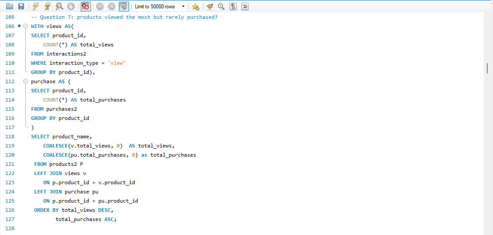

An end-to-end SQL analysis of e-commerce customer interactions, product performance, purchases, reviews, sessions, and user behavior. The project focuses on data preparation, validation, exploratory analysis, and extracting business insights from multiple related tables.
The project explores how customers interact with products, how those interactions relate to purchases, and how product, sales, review, and user-level data can be analyzed using SQL.
I worked with six related e-commerce datasets covering interactions, products, purchases, reviews, sessions, and users.
Before analysis, I imported the CSV data into MySQL, validated the imports, investigated duplicates and blank values, standardized text fields, handled NULL values, and created cleaned working tables.
I then used SQL to investigate customer engagement, product performance, sales and revenue, customer reviews, and user characteristics.
The analysis was built around six main tables containing customer, product, interaction, purchase, review, and session data.
Data preparation was performed directly in MySQL before the exploratory analysis.
Imported CSV files into MySQL using LOAD DATA INFILE and checked the import using row counts and warnings.
Used SELECT, COUNT, COUNT DISTINCT, SHOW WARNINGS, DESCRIBE and other checks to inspect the imported data.
Created cleaned copies using the naming pattern interactions2, products2, purchases2, reviews2, sessions2 and users2.
Used ROW_NUMBER() with PARTITION BY to investigate duplicate records across the datasets.
Trimmed IDs and text fields and standardized values such as interaction types, referrer sources and income levels.
Converted blank values to NULL where appropriate, including blank product ratings and purchase IDs in the reviews table.
The project combines data preparation techniques with analytical SQL patterns used to answer business questions.
A look at the SQL queries used to investigate customer behavior, product performance, and sales.

SQL analysis performed in MySQL Workbench.
A few examples of the SQL patterns used throughout the project.
WITH CTE AS (
SELECT *,
ROW_NUMBER() OVER(
PARTITION BY interaction_id,
user_id,
product_id,
session_id,
interaction_type,
time_stamp,
dwell_time_ms
) AS row_num
FROM interactions2
)
SELECT *
FROM CTE
WHERE row_num > 1;WITH views AS (
SELECT
product_id,
COUNT(*) AS total_views
FROM interactions2
WHERE interaction_type = 'view'
GROUP BY product_id
),
purchase AS (
SELECT
product_id,
COUNT(*) AS total_purchases
FROM purchases2
GROUP BY product_id
)
SELECT
product_name,
COALESCE(v.total_views, 0) AS total_views,
COALESCE(pu.total_purchases, 0) AS total_purchases
FROM products2 p
LEFT JOIN views v
ON p.product_id = v.product_id
LEFT JOIN purchase pu
ON p.product_id = pu.product_id
ORDER BY total_views DESC,
total_purchases ASC;SELECT
ROUND(AVG(total_amount), 2) AS Average_order_value
FROM purchases2;SELECT
ROUND(AVG(rating), 2) AS average_rating
FROM reviews2;The analysis was organized around four areas of the e-commerce business.
The interaction analysis examined how users engaged with products throughout their sessions.
View was the most common interaction type in the dataset.
Apple Accessorie Stand recorded the most product interactions.
Apple Accessorie Stand also recorded the highest total dwell time.
Interactions peaked in May at 11,131, while June recorded the lowest monthly interaction volume at 6,658.
View interactions contributed 76.56% of total dwell time, while add-to-cart interactions contributed 12.65%.
Products with high views but relatively few purchases were identified for further investigation because they may indicate interest without conversion.
Product-level analysis examined categories, brands, pricing, ratings, reviews, and interaction patterns.
Electronics contained the highest number of products.
Apple had the highest number of products in the dataset.
Electronics had the highest average product price, while Grocery & Gourmet had the lowest.
Samsung Air7 DSLR, Dell Book6 Bluetooth Earbuds and Samsung Ultra 13 Display Tablet appeared among the highest-priced products.
Clothing & Accessories recorded the highest value in the category conversion analysis.
Apple Accessorie Stand recorded the highest number of reviews.
Electronics recorded the highest average rating among categories.
The analysis investigated product price alongside ratings, but the query did not calculate a statistical correlation.
Sales analysis focused on purchase volume, revenue, average order value, products, categories and customers.
March and February recorded high purchase activity, while September recorded the fewest purchases.
Apple Accessorie Stand was identified as the highest-selling product.
User ID 6b888357-4601-4b33-8543-6ca73a7f7b04 recorded the highest spending.
Electronics and Sports & Outdoors generated the highest revenue among the analyzed categories.
Apple Accessorie Stand generated the highest product-level revenue.
The final analysis combined customer reviews with demographic, preference, loyalty and spending information.
Wilson Book19 Fitness Equipment was identified as the highest-rated product under the review threshold used.
Apple Accessorie Stand had the highest number of reviews.
Pyrex recorded the highest average brand rating under the minimum review threshold.
March recorded the highest monthly review activity.
Users from the United States represented 37.81% of users and generated the highest revenue among countries.
Female users were slightly more numerous than male users.
Medium-income users represented the largest income-level group.
Bronze loyalty users were the largest spending group in the loyalty-tier analysis.
Electronics was the most preferred product category among users.
Data quality checks were included throughout the preparation process rather than treating cleaning as a separate final step.
The workflow included duplicate investigation, blank-value checks, structure inspection, trimming, text standardization and NULL handling.
Cleaned working tables were created alongside the imported tables, allowing the original imported data to remain available for comparison.
Some analytical queries were investigative rather than corrective; for example, duplicate checks were used to identify potential duplicate records rather than automatically deleting them.
Loaded six CSV datasets into MySQL.
Checked warnings, row counts, structures, distinct values and data quality.
Created working copies and standardized IDs, text and NULL values.
Investigated customer behavior, products, sales, reviews and users.
Used shared identifiers to connect interactions, products, purchases, sessions and users.
Translated SQL results into business-focused findings and areas for further investigation.
This project demonstrates an end-to-end SQL workflow, from importing raw CSV data into MySQL through data validation, cleaning, exploratory analysis and business insight generation.
The analysis examined customer interactions, product performance, purchasing behavior, revenue, reviews, ratings and user characteristics across six related datasets.
The project also strengthened practical SQL skills including CTEs, window functions, joins, aggregations, conditional logic, NULL handling and data standardization.